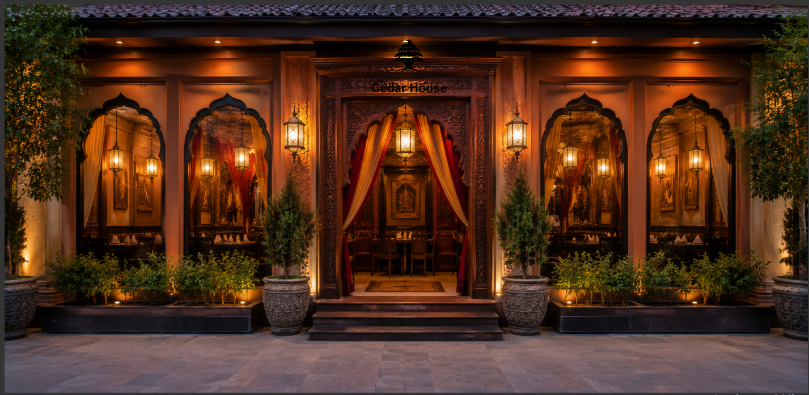

Our Story

At Cedar House, our journey began with a passion for sharing the authentic, vibrant flavors of Lebanon. We believe that food is more than just nourishment; it is a bridge that connects cultures and brings people together.
From our kitchen to your table, we use traditional recipes passed down through generations. Every ingredient is carefully selected to ensure that each dish tells a story of heritage, family, and the warmth of Lebanese hospitality.
We take immense pride in our commitment to quality, meticulously sourcing only the freshest ingredients to ensure the integrity and authenticity of every recipe we serve. Our dining space is crafted to be an extension of our own home, blending elegant aesthetics with a warm, inviting atmosphere that encourages lingering conversations and shared laughter among friends and family.
Drawing from our professional backgrounds in providing technical and communication support, as well as our experience in handling administrative tasks, we bring a high level of precision and dedicated care to every aspect of your visit, ensuring a seamless and memorable dining experience. Whether you are visiting us for a quiet, intimate dinner or hosting a vibrant celebration, we invite you to pull up a chair, experience the depth of Lebanese tradition, and become a cherished part of our extended family here at Cedar House.